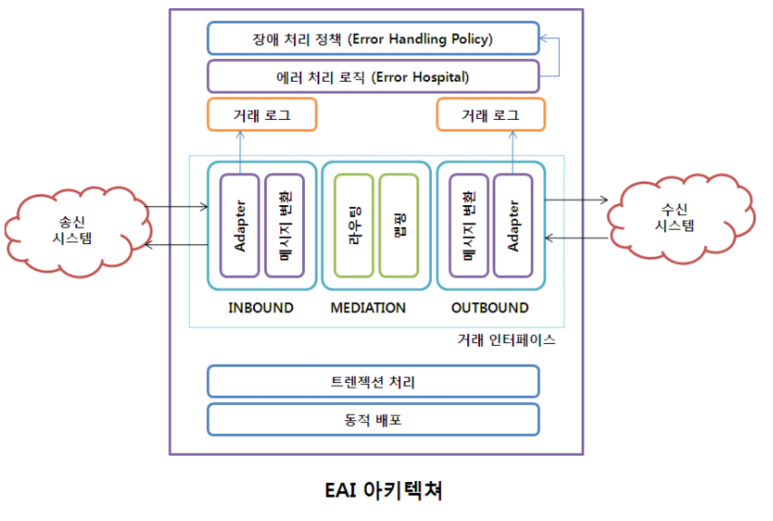
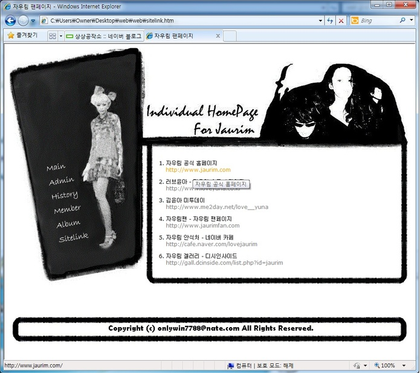
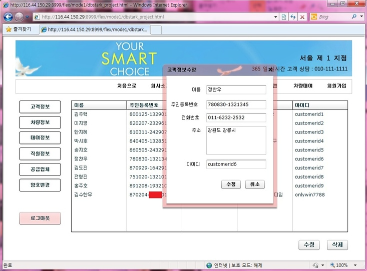
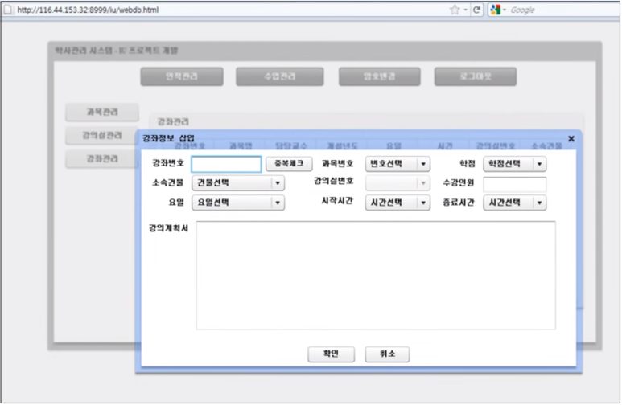
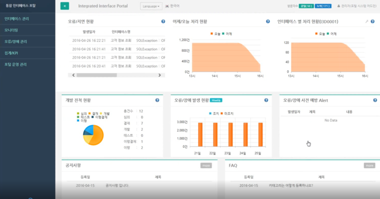
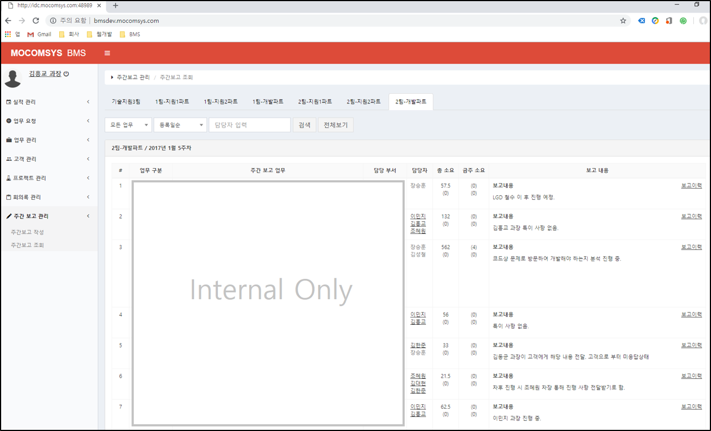

안녕하세요. 김흥교입니다.
항상 여유롭지만. 가볍지는 않게.
할 줄 아는 것
EAI(Enterprise Application Integration) 및 BI(Business Intelligence) 솔루션 개발.
여러 금융, 유통, 제조 분야의 솔루션 개발 및 장애 처리 경험 보유.
c/c++, java, c# 등 다채로운 언어 및 Linux/Unix 등의 여러 OS 경험
개발 방향은 언제나 full-stack 을 지향합니다.

회사 내부 자료 빼고 이미지 첨부 가능한 자료는...
22살. 제일 좋아하는 가수는 자우림
군대 2년을 버티게 해준 김윤아 씨에게 선사하는 팬페이지
xhtml 1.1 spec 준수 및 표준웹 지향 (w3c 유효성 100% 통과)

23살. RIA의 광풍에 빠지며
대학교 시절, 마이크로소프트웨어 잡지를 보며 RIA 의 광풍에 휩쓸리며..
팀프로젝트를 모두 Flex 로 개발 (Back-End : php + mysql)
Back-End 는 PHP + Mysql 로 만들었습니다.


인터페이스 모니터링
B2B 데이터 연계 시, 발생하는 트랜잭션 및 장애 모니터링.

업무 관리/협업 시스템 개발
업무 관리/협업 시스템. 풀스택 개발
nginx + php7 + laravel5 + MariaDB
매번 느끼는 거지만 역시 저는 디자인에는 소질이 없군요.
